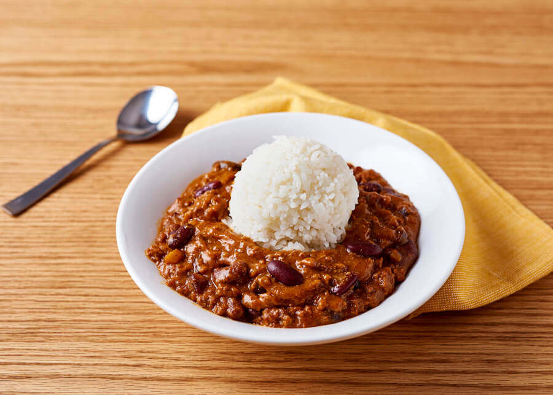

Chili and Rice

Description:
A simple, common Hawaiian dish usually made by purchasing Zippy's chili and cooking your own rice.
This is very easy to make. Get some chili at Zippy's and pour it over rice. (Bonus points if you buy the rice at Zippy's too.)
Link to buy if you are not from Hawaii.
Ingredients:
- Zippy's Chili (DoorDash/Uber Eats OK)
- Uncooked/ Cooked Rice (DoorDash/Uber Eats OK)
Steps:
- Get Zippy's chili however you can.
- Pour chili over rice.